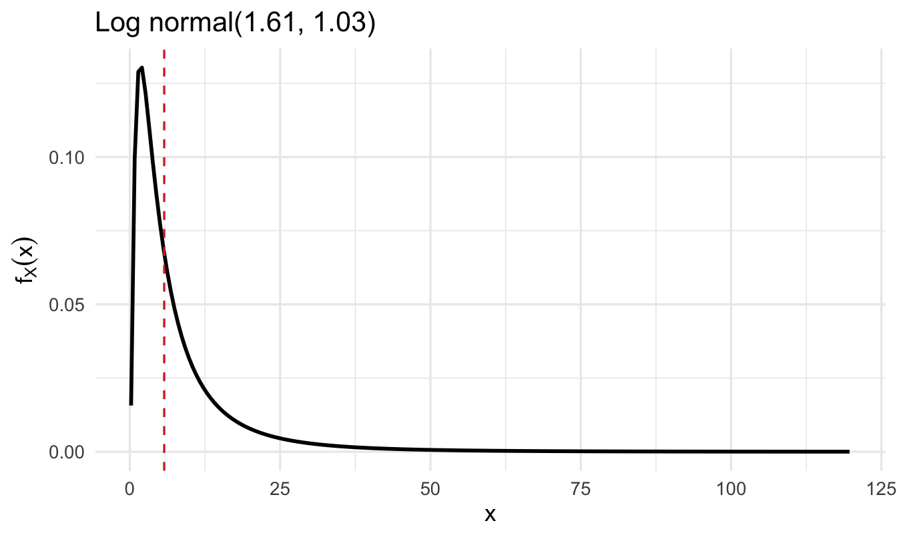
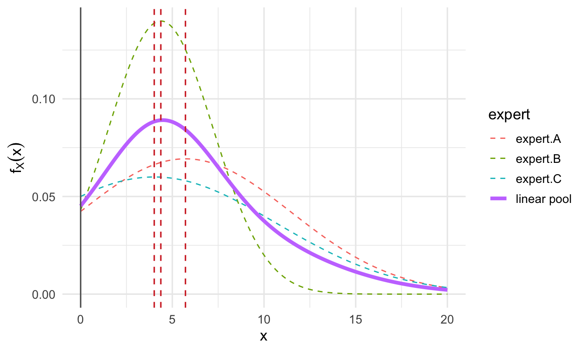
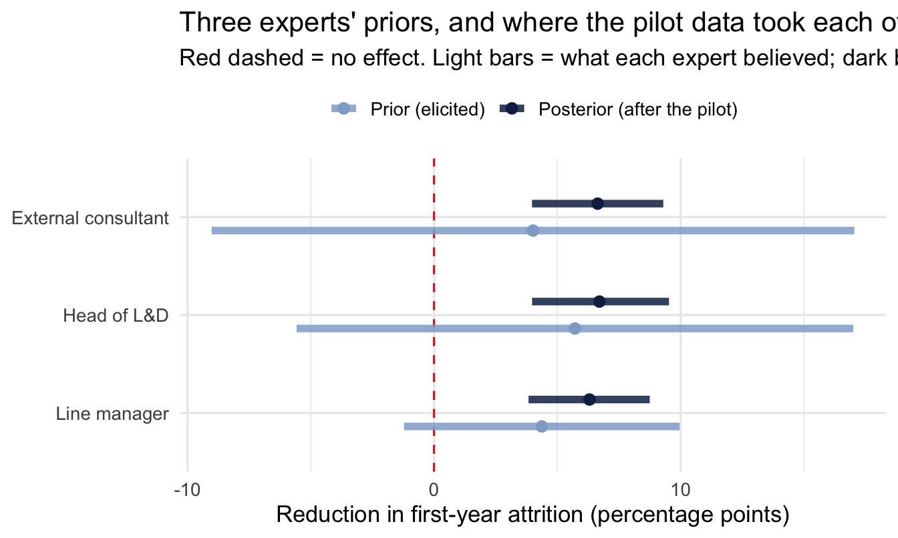
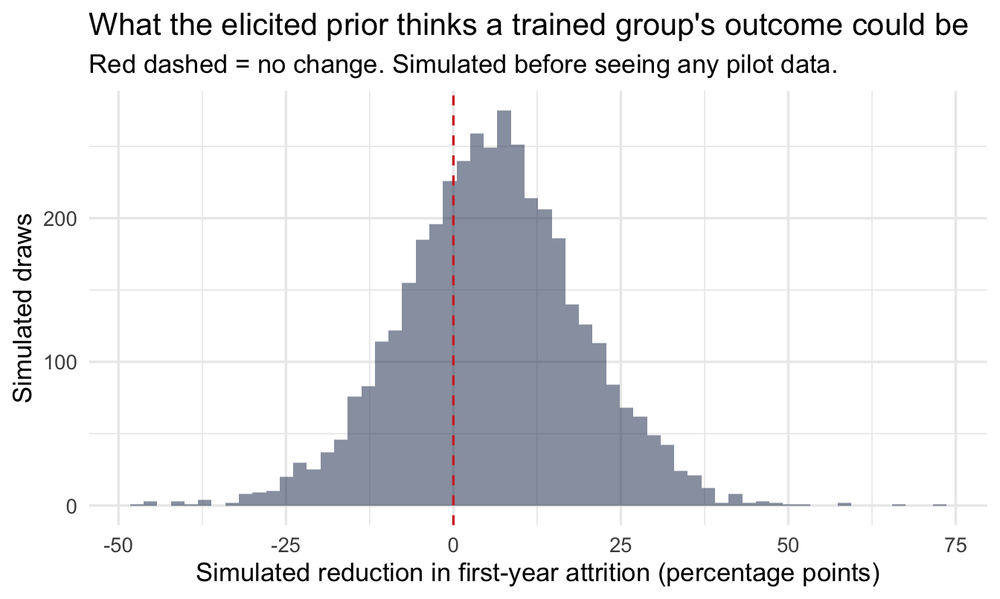

install.packages("SHELF")23 The Elicitation Workflow: Building Priors With Your Stakeholders
Welcome back
Every chapter so far has built a prior one of two ways: a weakly informative default (Chapter 5), or one estimated from data — your own groups (Chapter 14) or an external benchmark (also Chapter 14). There’s a third source, often better than both, that this chapter is built around: asking the people who actually know.
This isn’t just a statistical technique. Done well, it’s an organisational one — the difference between presenting a model to stakeholders at the end, and having them recognise their own judgment inside it from the start.
What you’ll be able to do by the end
- Run a structured elicitation session using SHELF’s quartile questions, which a non-statistician can actually answer
- Fit a formal probability distribution to elicited judgements with the
SHELFpackage - Combine several experts’ judgements into one pooled prior
- Run a prior sensitivity analysis across experts, to see whether the data makes the conclusion robust to whose judgement you used
- Feed an elicited prior directly into a
brmsmodel - Explain why involving stakeholders in the prior changes how they receive the posterior
- Use a prior’s width as a quick, principled way to prioritise which analyses are worth commissioning next
23.1 Setup
library(tidyverse)
library(SHELF)
library(brms)
library(tidybayes)
theme_set(theme_minimal(base_size = 13))
set.seed(2026)
# Shared colour tokens (matching theme/academicdesign*.scss). The navy ramp
# carries the data; red is reserved for reference lines and annotations,
# never for a second data series.
navy <- "#122a52"
navy_mid <- "#3d68a8"
navy_light <- "#8fabd0"
red <- "#d32f2f"This chapter uses the SHELF package (the Sheffield Elicitation Framework, built by Jeremy Oakley and Anthony O’Hagan) — a set of tools for turning expert judgement into a fitted probability distribution, widely used in health economics and risk analysis. It’s a genuinely different tool from anything else in this book: the input isn’t a dataset, it’s a conversation.
A distinction worth drawing at the start, because it is easy to miss. SHELF is two things: a protocol for running the conversation, and an R package that fits distributions to whatever numbers the conversation produced. This chapter uses both. The questions in the next section are the ones SHELF prescribes, and I recommend them over the alternatives — including the version I used myself for years, which gets its own callout further down.
23.2 The problem elicitation solves
You’re about to model the expected effect of a new manager-training programme on first-year attrition. There’s no historical data on this programme yet — but your Head of L&D has run three similar interventions before and has a real, informed opinion about what to expect. A default weakly-informative prior throws that opinion away. A prior “estimated from data” doesn’t apply, because there isn’t any yet.
Important
The Head of L&D’s judgement is data — it’s just data in someone’s head instead of a spreadsheet. Elicitation is the structured process for getting it out in a form a model can use.
23.3 Asking the right questions
Nobody can answer “what’s your prior probability distribution for the effect size?” — that’s not how people think. They can answer calibrated questions about specific values:
NoteThe quartile method — ask in this order
- “What’s the lowest the true reduction could plausibly be? And the highest?” — the plausible limits, asked first and deliberately as a range you’d be astonished to fall outside.
- “Given that range, what value would you say the truth is equally likely to fall above or below?” — the median.
- “Now think only about the lower half. What value splits that in two?” — the lower quartile. Then the same for the upper half — the upper quartile.
Two things make this work, and both are deliberate.
The limits come before the best guess. Ask for a central estimate first and everything afterwards gets anchored to it. Ask for the range first and the expert has to think about how wrong they could be before they commit to being right.
Each question splits a range in half. People are noticeably better at “is it above or below this?” than at “how likely is this?”, and the quartile questions are just that judgement applied twice.
SHELF also offers the tertile method (thirds instead of quarters) and the roulette method, where the expert distributes a fixed number of chips across bins to draw their own distribution. Use roulette with a group and a whiteboard; it is the easiest of the three for people who dislike numbers.
WarningWhy I no longer ask for the 10th and 90th percentiles
For years I used a three-number version — 10th percentile, median, 90th percentile — which I adapted from Douglas Hubbard’s How to Measure Anything. Hubbard’s version is wider still: a 90% confidence interval, which is the 5th and 95th percentiles. If you have read that book, or seen the 10/90 version in something of mine, this is the correction.
The problem is the same for both, and it is the reason SHELF refuses to ask for tail quantiles at all. Judging the far tail of your own uncertainty is the specific thing people are worst at, and the further out you ask, the more exposed the answer is. The quartiles are the least extreme of the three formats. Hubbard’s 5th and 95th are the most.
The evidence is blunt. Soll and Klayman found subjective intervals sometimes only 40% as wide as they needed to be — and, the finding worth remembering, three formats that look almost identical produced roughly 40 percentage points of difference in overconfidence. How you ask moves the answer by more than who you ask.
In fairness to Hubbard, he has an answer to this and it is a good one. His method is not “ask for a 90% interval”; it is “train people until their 90% intervals actually contain the truth 90% of the time”, using equivalent-bet tests and repeated scored feedback. Calibration training demonstrably works. If you are willing to run it, the format matters much less. Most organisations are not going to run it, and an untrained 90% interval is the worst of the three options rather than the best.
So: ask for quartiles. If you inherit numbers already collected as 10/50/90, don’t rerun the session — fitdist() takes whatever probs you give it. Just don’t design a new one that way.
Suppose your Head of L&D says the reduction in first-year attrition could plausibly be anywhere from nothing at all up to about 25 percentage points; that 5 points splits that range in two; and that the halves either side of 5 split at 2.5 and 10.
Three numbers to fit, then, plus a lower limit: 2.5 (lower quartile), 5 (median), 10 (upper quartile).
23.3.1 Fitting a distribution to those three numbers
judgements <- fitdist(
vals = c(2.5, 5, 10),
1 probs = c(0.25, 0.5, 0.75),
lower = 0 # a reduction can't be negative in this framing
)
judgements$Normal
judgements$best.fitting- 1
-
The quartiles, per the protocol above.
fitdist()will accept any probabilities you hand it — the argument for using these ones is about the conversation, not the code.
mean sd
1 5.71577 5.757771
best.fit
1 lognormalfitdist() fits several candidate distributions (Normal, log-normal, gamma, beta, Student-t) to the three elicited points and reports which fits most closely.
Two outputs, and they answer different questions:
judgements$Normalgives themeanandsdof the best-fitting Normal. This is the pair you’ll hand tobrmslater, becauseprior(normal(...))is what abrmsprior wants. It says the Head of L&D’s belief, forced into a Normal shape, is centred around 5.7 points with a standard deviation of about 5.8.judgements$best.fittingnames the distribution family that reproduces her three numbers most faithfully. With an asymmetric set of judgements like 2.5 / 5 / 10 — the gap upward being twice the gap downward — this is often not the Normal, because a Normal can’t be skewed. That mismatch is information: she thinks the upside is longer than the downside, and a Normal prior discards that.
NoteWhich one should you actually use?
The honest answer is that it depends on how much the skew matters, and the way to find out is to check rather than assume.
Using judgements$Normal is the pragmatic default — it’s what plugs straight into brms, and with any real quantity of data the difference between a Normal and a skew-Normal prior is invisible in the posterior. Using the best-fitting family means either finding a brms prior that matches it or writing a custom one, which is real work.
The check that settles it: fit the model both ways and compare the posteriors. That’s the same sensitivity logic this chapter applies to whose prior you use, applied instead to which shape you fitted it with — and if the answer moves, you’ve learned that the skew was carrying weight and is worth the effort.
Plot it to check the shape makes sense — and, more importantly, to show the expert:
plotfit(judgements, d = "best", lp = TRUE,
showPlot = FALSE, returnPlot = TRUE) +
geom_vline(xintercept = judgements$limits$lower,
linetype = "solid", colour = "grey40") +
geom_vline(xintercept = judgements$Normal$mean,
linetype = "dashed", colour = red) +
theme_minimal(base_size = 13)- 2
-
plotfit()resets ggplot’s global theme as a side effect. Put it back, or every later chart in the chapter changes appearance.

2theme_set(theme_minimal(base_size = 13))feedback(judgements, quantiles = c(0.1, 0.25, 0.5, 0.75, 0.9))$fitted.quantiles
normal t skewnormal gamma lognormal logt beta hist mirrorgamma
0.1 -1.66 -2.64 0.588 1.00 1.34 1.13 NA NA NA
0.25 1.83 1.78 2.290 2.39 2.50 2.50 NA NA NA
0.5 5.72 5.64 5.420 5.21 5.00 5.00 NA NA NA
0.75 9.60 9.51 9.620 9.76 10.00 10.00 NA NA NA
0.9 13.10 13.90 14.000 15.60 18.70 22.10 NA NA NA
mirrorlognormal mirrorlogt
0.1 NA NA
0.25 NA NA
0.5 NA NA
0.75 NA NA
0.9 NA NA
$fitted.probabilities
elicited normal t skewnormal gamma lognormal logt beta hist mirrorgamma
2.5 0.25 0.288 0.289 0.268 0.261 0.25 0.25 NA NA NA
5 0.50 0.451 0.453 0.469 0.484 0.50 0.50 NA NA NA
10 0.75 0.772 0.774 0.767 0.759 0.75 0.75 NA NA NA
mirrorlognormal mirrorlogt
2.5 NA NA
5 NA NA
10 NA NAThat table is the single most useful thing to put in front of the expert, and it repays a moment on how to read it. Each column is a fitted distribution family; each row is a quantile. The numbers are what that fitted distribution says the value at that quantile is.
So find the 0.1, 0.5 and 0.9 rows and compare them back to the 1, 5 and 12 she actually said. A good fit reproduces those three almost exactly — that’s what “fitted” means. The rows that earn their keep are the ones she didn’t give you: 0.25 and 0.75. Those are the fit’s interpolation, a claim she never made, and they’re the natural thing to test with her: “this says there’s a one-in-four chance the reduction comes in below [the 0.25 row] — does that sound right to you?”
If she balks at that number, the three elicited values need revisiting. That is the loop working, not a problem with the tool.
ImportantThe feedback loop is the whole point
Show the fitted curve back to the expert and ask: “does this look like what you meant?” Experts are often surprised by how fat or thin the tails of the fitted distribution are compared to what they intended — and adjusting the elicited numbers until the fitted curve actually matches their belief is where the real value of this process lives. Skipping this step and just taking the first fitted distribution defeats the purpose.
TipFor the ML/DS crowd: LLMs as a mechanical fitting shortcut
Turning three elicited numbers into distribution parameters is a solved, mechanical curve-fitting problem — which makes it a reasonable task to hand to an LLM if you’re prototyping and don’t have SHELF to hand: describe the elicited quartiles and median and ask for the Beta(α, β) or Gamma(α, β) that reproduces them. It lowers the technical bar without changing anything about the process itself — you should still verify the distribution you get back actually reproduces your three numbers, and still show the fitted curve back to the expert. For real work, SHELF::fitdist() remains the better choice: it fits and compares several candidate families at once and was purpose-built for exactly this job.
23.4 Multiple experts, one pooled prior
Real decisions rarely rest on one person’s judgement. The fastest version of this is to elicit from several experts independently (critically: before they discuss it with each other, to avoid one confident voice anchoring everyone else), then pool:
# Rows = the three elicited points; columns = one expert each
vals_matrix <- matrix(
c(2.5, 5, 10, # Head of L&D
2.8, 4, 6.5, # a line manager who ran a pilot
0.5, 3, 9), # an external L&D consultant, more uncertain
nrow = 3, ncol = 3
)
probs <- c(0.25, 0.5, 0.75)
group_fit <- fitdist(vals = vals_matrix, probs = probs, lower = 0)
1plotfit(group_fit, d = "normal", lp = TRUE, xu = 20,
showPlot = FALSE, returnPlot = TRUE) +
geom_vline(xintercept = group_fit$limits$lower,
linetype = "solid", colour = "grey40") +
geom_vline(xintercept = group_fit$Normal$mean,
linetype = "dashed", colour = red) +
theme_minimal(base_size = 13)- 1
-
xusets the right-hand edge of the axis by hand. We gavefitdist()a lower limit but no upper one, so the fitted curves run to infinity andplotfit()’s own choice of axis limit fails on some SHELF versions. Any finite value a little above the largest elicited number works; there is nothing statistical in the choice.

theme_set(theme_minimal(base_size = 13))
ImportantA practical trap: don’t let an elicited value sit exactly on the bound
Notice the third expert’s low estimate above is 0.5, not 0, even though lower = 0 here. If an elicited value is exactly equal to the bound you’ve set, several of the candidate distributions fitdist() tries (log-normal, gamma) need values strictly greater than that bound — they work with the log of the gap between the value and the bound, and log(0) is -Inf. The optimiser then fails with a rather unhelpful non-finite value supplied by optim error that gives no hint the real cause was a boundary value.
In practice, experts often say “zero” as shorthand for “as low as it could plausibly go,” not literally zero. If you’re given that answer, swap in a small non-zero value instead (0.5, or something like 1% of the scale you’re working in) — it keeps the same intent without sitting exactly on a boundary the fit can’t handle.
NoteThe fuller version: a Delphi-style round
Eliciting once and pooling, as above, is fine for a fast, low-stakes prior. For a decision with real stakes, the classic Delphi method adds two more steps worth the extra hour:
- Elicit individually — each expert’s limits, median and quartiles, before anyone sees anyone else’s numbers.
- Share the spread anonymously — everyone sees the range of answers, not who gave which one.
- Discuss the outliers out loud. Someone at the extreme often holds private or local information the others don’t — understanding why they differ is frequently as valuable as the pooled number itself.
- Re-elicit a second round in light of that discussion, then pool.
I run it towards calibration, not consensus — if experts are still spread out after a second round, that’s telling you something true about how much the organisation actually knows, not a process failure.
That is my departure from Delphi, not a description of it, and it is worth being straight about. The original method was built at RAND to produce reliable consensus, and treating persistent spread as a finding rather than a failure inverts its purpose. Be straight about the evidence too: Sackman’s 1974 RAND critique called Delphi unreliable and unvalidated, and Rowe and Wright’s later tally gives it twelve wins to two against simply averaging a single round — better than nothing, with no consistent advantage over other structured procedures. Use it because structure beats a meeting, not because the method has been shown to be the best one.
TipDisagreement is information, not a problem to hide
If your three experts’ ranges barely overlap, that’s a real finding — it says the organisation doesn’t actually have a shared view of what to expect, which is worth surfacing before the training programme launches, not after it underperforms someone’s private expectation. Sometimes the disagreement isn’t really about the number at all: two experts can give different answers because they’re implicitly reasoning from different causal models of what drives attrition, and the elicitation session is what surfaces that.
WarningAveraging confident disagreement produces a prior nobody holds
The obvious thing to do with three curves is average them, and it has a failure mode worth seeing before you rely on it.
Take two experts who are each confident and who disagree — one says the reduction is around 3 points, the other around 12, and both give narrow ranges. Average their distributions and you get a bimodal prior: two humps with a valley between them. Read as a statement of belief, it says the truth is likely to be near 3 or near 12 and unlikely to be near 7 — which is a claim neither expert made and nobody in the room would sign.
The fix is not a cleverer weighting. It is to build one distribution together rather than averaging separate ones, which is what SHELF’s “Rational Impartial Observer” device exists to do: the group is asked what a reasonable neutral person would believe having heard all the arguments, and that single distribution is what gets fitted.
The reassuring counterweight, from a study that compared them directly: every aggregation method beat every individual expert under every scoring rule. That you aggregated matters more than how. Just look at the pooled curve before you use it, and if it has two humps, go back to the room.
23.5 An alternative to pooling: does whose prior you use change the answer?
Pooling turns several experts’ judgements into one prior. A different, often more useful question is: if I’d used each expert’s prior on its own, would we end up recommending something different? Instead of running the model once with a pooled prior, run it once per expert’s prior and compare the results. That turns disagreement between experts into a direct answer to two questions a decision-maker cares about far more than the prior itself:
- Does the pilot data dominate, so the conclusion barely depends on whose prior you started from? If so, that’s reassuring, and worth saying explicitly: “the result is robust to who you believed beforehand.”
- Or does the choice of prior still meaningfully swing the conclusion, even after seeing the data? If so, that’s not a problem to hide — it’s telling you the decision genuinely still rests on whose judgement you trust, and stakeholders deserve to see that openly rather than have it buried inside a single pooled number.
Recall the running example from earlier in this chapter: no data yet exists for a training programme that hasn’t launched. To actually run the sensitivity check below rather than just describe it, here’s a small simulated stand-in for the pilot that would eventually produce that data — clearly not real, but enough to show the mechanics properly. The next section’s model reuses this same simulated pilot.
set.seed(2026)
training_pilot_data <- tibble(
condition = factor(rep(c("Control", "Trained"), each = 20),
levels = c("Control", "Trained"))
) |>
mutate(
attrition_reduction = if_else(
condition == "Trained",
rnorm(n(), mean = 4, sd = 5),
rnorm(n(), mean = 0, sd = 5)
)
)# One brms fit per expert's individually elicited prior, instead of
# one fit using a pooled prior.
sensitivity_fits <- group_fit$Normal |>
as_tibble(rownames = "expert") |>
pmap(function(expert, mean, sd) {
fit <- brm(
attrition_reduction ~ 1 + condition,
data = training_pilot_data,
prior = prior_string(
paste0("normal(", mean, ",", sd, ")"),
class = "b", coef = "conditionTrained"
),
chains = 4, iter = 2000, refresh = 0
)
fixef(fit)["conditionTrained", ] |>
as_tibble_row() |>
mutate(expert = expert, .before = 1)
}) |>
list_rbind()
sensitivity_fits# A tibble: 3 × 5
expert Estimate Est.Error Q2.5 Q97.5
<chr> <dbl> <dbl> <dbl> <dbl>
1 expert.A 6.71 1.40 3.98 9.53
2 expert.B 6.31 1.25 3.83 8.75
3 expert.C 6.64 1.36 3.98 9.30
TipReading this table
Look at the spread of Estimate across experts, and how much their Q2.5–Q97.5 intervals overlap — not any single row. If all three posteriors land in roughly the same place despite starting from noticeably different priors, that’s the finding: the pilot data was informative enough to make the conclusion robust to whose starting judgement you used. If they still disagree meaningfully, the prior is still doing real work — the choice of whose judgement to trust (or how to pool it) is still a live decision, not a formality.
23.5.1 The chart that makes the point
Three rows of numbers is the wrong format for a comparison whose whole content is how much things moved. Put each expert’s prior next to the posterior it produced, and the answer is immediate:
Code
expert_labels <- c("Head of L&D", "Line manager", "External consultant")
prior_intervals <- group_fit$Normal |>
as_tibble(rownames = "expert") |>
transmute(
expert = expert_labels[row_number()],
stage = "Prior (elicited)",
estimate = mean,
lower = qnorm(0.025, mean, sd),
upper = qnorm(0.975, mean, sd)
)
posterior_intervals <- sensitivity_fits |>
transmute(
expert = expert_labels[row_number()],
stage = "Posterior (after the pilot)",
estimate = Estimate,
lower = Q2.5,
upper = Q97.5
)
bind_rows(prior_intervals, posterior_intervals) |>
mutate(stage = factor(stage, levels = c("Prior (elicited)",
"Posterior (after the pilot)"))) |>
ggplot(aes(x = estimate, y = fct_rev(factor(expert)), colour = stage)) +
geom_vline(xintercept = 0, linetype = "dashed", colour = red) +
geom_linerange(aes(xmin = lower, xmax = upper),
linewidth = 2, alpha = 0.85,
position = position_dodge(width = 0.55)) +
geom_point(size = 2.5, position = position_dodge(width = 0.55)) +
scale_colour_manual(values = c("Prior (elicited)" = navy_light,
"Posterior (after the pilot)" = navy)) +
labs(
title = "Three experts' priors, and where the pilot data took each of them",
subtitle = "Red dashed = no effect. Light bars = what each expert believed; dark bars = what the model concluded.",
x = "Reduction in first-year attrition (percentage points)",
y = NULL, colour = NULL
) +
theme(legend.position = "top")
ImportantWhat to look for, in this order
How far each dark bar sits from its light one. That distance is what the data did. Large movement means the pilot was informative; barely any movement means the prior is still driving the answer, and with 40 observations in this simulated pilot you should expect somewhere in between.
How much the three dark bars overlap each other. This is the actual deliverable of a sensitivity analysis. Three posteriors sitting on top of one another means the conclusion is robust to whose judgement you started from — say that out loud, because it’s the strongest thing you can say about a result built on elicited priors. Three that remain visibly apart means the recommendation genuinely still depends on whose view you trust, and that belongs in front of the decision-maker rather than averaged away.
Whether any dark bar crosses the red line while others don’t. The uncomfortable case, and the one worth checking for explicitly: the programme looks worth funding on one expert’s prior and not on another’s. That is not a modelling failure. It is a finding about how much the organisation actually knows, and it is far better to discover it here than in the meeting where the budget gets signed.
ImportantWhy this is worth showing back to your experts
This is one of the most direct ways to make elicitation land with a sceptical stakeholder. Show the Head of L&D specifically: “here’s what the model concludes using your prior alone, and here’s what it concludes using the line manager’s, or the consultant’s.” If their own number would have led to a materially different recommendation, that’s a concrete, honest answer to “did my input actually matter?” If it wouldn’t have — if the data swamps the disagreement — that’s just as useful to know, and it reassures everyone that the conclusion doesn’t quietly hinge on one person’s opinion.
NoteA different lens: this is a tipping-point sensitivity analysis
Rerunning the same model under different assumptions and watching whether the conclusion changes isn’t a Bayesian-only idea — it’s the same instinct behind a one-way sensitivity analysis or tornado diagram in classical decision analysis, or behind checking whether a regression result survives a different choice of controls. What’s specifically Bayesian here is that the “assumption being varied” is a formally elicited prior rather than an arbitrary modelling choice — so this sensitivity check and the elicitation process earlier in this chapter directly reinforce each other.
23.6 Putting the elicited prior to work
The whole point is to use this in an actual model — take the fitted parameters straight into brms:
# Reuses the simulated pilot from the previous section - this is the
# single-expert version (judgements), fed straight into brms, of the
# same idea the sensitivity check just ran once per expert.
fitted_normal <- judgements$Normal
fit_training <- brm(
attrition_reduction ~ 1 + condition,
data = training_pilot_data,
prior = prior_string(
paste0("normal(", fitted_normal$mean, ",", fitted_normal$sd, ")"),
class = "b", coef = "conditionTrained"
),
chains = 4, iter = 2000, refresh = 0
)
fixef(fit_training) Estimate Est.Error Q2.5 Q97.5
Intercept -1.188628 0.9989025 -3.118569 0.7048581
conditionTrained 6.715098 1.3750474 4.000805 9.352448123.6.1 Check the elicited prior before you trust it
An elicited prior gets no exemption from Chapter 10’s step 4. If anything it needs the check more than a weakly-informative default does, because an informative prior is by definition capable of doing damage. So: what does this prior, combined with the rest of the model, think the pilot data could look like?
Code
n_sim <- 4000
tibble(
1 baseline = rnorm(n_sim, 0, 10),
2 effect = rnorm(n_sim, fitted_normal$mean, fitted_normal$sd),
sigma = rexp(n_sim, 0.2),
trained = rnorm(n_sim, baseline + effect, sigma)
) |>
ggplot(aes(trained)) +
geom_histogram(bins = 60, fill = navy, alpha = 0.5) +
geom_vline(xintercept = 0, linetype = "dashed", colour = red) +
labs(
title = "What the elicited prior thinks a trained group's outcome could be",
subtitle = "Red dashed = no change. Simulated before seeing any pilot data.",
x = "Simulated reduction in first-year attrition (percentage points)",
y = "Simulated draws"
)- 1
-
brms’ default intercept prior, roughly — the control group’s baseline, about which we elicited nothing. - 2
- The elicited prior, the one part of this that came from a person.

ImportantTwo things this catches, and one of them is political
The statistical check first: does the simulated distribution stay inside the range of outcomes the measure can actually take? A reduction in first-year attrition of 60 percentage points is not possible in an organisation with 20% first-year attrition, and if the prior thinks it is, either the elicited numbers or the scale got misunderstood somewhere.
The second is the one worth the extra ten minutes. Show this chart back to the expert too. She answered three questions about where a range splits; this is what those three answers imply about the actual pilot result, which is not a translation anyone does in their head. If she looks at it and says “no, I’d be astonished by anything above eight points,” the elicitation isn’t finished — and you have found that out before the prior is doing work inside a model with her name attached to it.
That’s the same feedback loop as plotfit() and feedback() earlier, extended one step further: from does this curve match your belief about the parameter to does this match what you’d expect to see happen.
23.6.2 Reading the result
fixef(fit_training) |>
as_tibble(rownames = "term")# A tibble: 2 × 5
term Estimate Est.Error Q2.5 Q97.5
<chr> <dbl> <dbl> <dbl> <dbl>
1 Intercept -1.19 0.999 -3.12 0.705
2 conditionTrained 6.72 1.38 4.00 9.35 Two rows. Intercept is the control group’s mean — no training, and nothing much expected to happen, so it should sit near zero. conditionTrained is the finding: the estimated additional reduction in first-year attrition for the trained group, with Q2.5 and Q97.5 giving the 95% credible interval around it.
Compare that Estimate against the elicited prior mean of about 5.7 points. Where it lands between the prior and what the pilot alone would have said is the whole mechanic of Bayesian updating made visible in one number — and it is exactly the comparison the Head of L&D will make first, because it answers “did what I said count for anything?”
This directly closes the loop from Chapter 5: instead of picking a weakly-informative default because you didn’t have anything better, you now have a prior that’s genuinely informed — and that a named person in the business would recognise and stand behind.
23.7 What a prior’s width tells you about what to analyse next
There’s a second, less obvious payoff to running this process properly: an elicited prior doesn’t just feed a model — its width tells you something about whether the analysis is worth commissioning at all.
This section is the informal version of something Chapter 24 does arithmetically. Here you compare prior widths by eye to decide what to work on next; there, the same question is answered in pounds, computed from the posterior draws themselves. If the idea below appeals, that is where it is finished.
TipThe logic, in plain terms
If your experts’ pooled prior is already narrow — everyone roughly agrees what the answer is — a full analysis has little room to change anyone’s mind, however rigorously it’s done. If the pooled prior is wide — real disagreement, real stakes — that’s exactly the situation where spending analyst time to narrow it down pays off.
The parameter everyone argues about is, mechanically, the one worth investigating. That is the whole idea, and you can act on it with nothing more than the elicited widths in front of you.
You don’t need to compute anything formally to get that benefit. Simply comparing pooled prior widths across a list of competing project requests gives a People Analytics team a principled way to answer “which of these should we analyse first?” — a tightly clustered prior means the organisation basically already knows the answer; a wide one, especially on a high-stakes question, is where a proper analysis has the most to add.
NoteThe four quantities, and which one answers which question
Decision analysts have formalised this, and the names are easy to confuse — I have confused them myself. They are four different quantities answering four different questions, and they are used in this order:
| Question it answers | |
|---|---|
| EVPI | Is any further evidence worth anything at all? Use it to screen. |
| EVPPI | Which uncertain input carries the decision? Use it to triage. |
| EVSI | What is this specific study, with this design and this sample size, worth? Use it to price. |
| ENBS | Population EVSI minus what the study costs. Use it to decide. |
The one people reach for when they mean “what is this piece of research worth” is EVSI, not EVPPI. EVPPI tells you which parameter to go after; EVSI tells you what a particular attempt to go after it would be worth.
Chapter 24 computes the first two directly from posterior draws — both turn out to be a couple of lines of R — and shows why the answer often points at a cost input rather than at the effect the analyst wanted to improve.
NoteA different lens: this is a decision-analysis idea wearing Bayesian clothes
Value of information comes from decision analysis and health economics, not from Bayesian statistics specifically — Raiffa and Schlaifer set out EVPI and EVSI in 1961, long before brms or modern computing. But it depends entirely on having a prior to measure the width of, which is exactly what this chapter’s elicitation process hands you for free. It’s a good example of how a useful idea travels between fields once you have the right building block in hand.
It also travels less far than it should. Health economics invented this machinery and still does not use it routinely. The obstacle is not technical.
23.8 Why do this at all: the organisational case
ImportantElicitation is also a change-management tool
A stakeholder who contributed their own judgement to the prior has a fundamentally different relationship to the posterior than one seeing the model for the first time in a results deck. They can see exactly where their input mattered, ask informed questions about what moved and why, and — because they were part of building it — are far more likely to trust and act on the result. Running the elicitation session is stakeholder management, not a detour from it.
NoteA different lens: this isn’t unique to Bayesian statistics
Structured expert-judgement elicitation predates Bayesian statistics in practice — the Delphi method (anonymous, iterative rounds of expert forecasting, developed at RAND in the 1950s) is a philosophy-agnostic ancestor of the same instinct: judgement, gathered systematically, beats judgement gathered informally. What Bayesian elicitation adds is a formal destination for that judgement — a probability distribution that plugs directly into a model — rather than a converged point forecast.
Delphi’s serious rival is worth knowing about even though this book doesn’t use it. Roger Cooke’s classical model scores experts on seed questions whose answers are already known, then weights each expert by how well calibrated and how informative they proved to be — with poor calibrators weighted all the way to zero. It is the uncomfortable idea in this field, because it means the most senior voice in the room can be formally worth nothing. Carry the counterweight honestly: it performs less well out of sample than it does in, and the aggregation finding above suggests the choice of method matters less than doing it at all.
TipFor the ML/DS crowd
Formal elicitation is close cousin to a few things you may already do informally: setting an informed search space and starting point for Bayesian hyperparameter optimisation based on past experience rather than a blind uniform range, or warm-starting a model with domain-informed initial parameters. The difference here is rigor — a documented, feedback-checked distribution instead of “I’ll just set the range to something that feels about right.” In safety-critical Bayesian ML applications (clinical trial design, risk modelling), formal elicitation exactly like this is often a required, audited step, not an optional nicety.
23.9 The other thing you can elicit
Everything so far has elicited a quantity: how high might this rate be, how confident are you, where are the edges. That is the obvious thing to ask an expert for, and it is not the only thing they know.
Go back to Chapter 21. Before that chapter could estimate anything, it had to state which variables belonged in the model — and it made the point that no fit statistic can decide this, because it is a question about cause and effect. Somebody has to say what they believe causes what.
That somebody is the same person sitting in this workshop.
Important
A DAG is an elicited object.
It is not a statistical result. It is a written record of what a group of people believe about how their organisation works, drawn before the data is touched — which is exactly what a prior is, pointed at structure instead of at magnitude.
The two halves of Part V are therefore the same move, done twice. Chapter 21 elicits the shape of the problem; this chapter elicits the numbers in it. Both are ways of getting judgement onto the page where it can be argued with, instead of leaving it in someone’s head where it silently sets the answer anyway.
23.9.1 Running the structural version
The same session, the same people, often the same hour. The mechanics are lighter, because you are drawing rather than quantifying:
- Name the outcome and the thing you might change. Attrition, and the manager-coaching programme.
- Ask what else affects the outcome. Write each on the board. Do not filter yet.
- Ask what affects those. This is where disagreement surfaces, and where the useful conversation is.
- Draw the arrows, and read them back. “So you’re saying tenure affects both whether someone gets coaching and whether they leave anyway?” — that sentence is what turns a vague belief into a checkable claim.
- Ask what is missing and unmeasured. Motivation, manager support, team context. Draw those too, marked as unobserved. They are the reason your estimate will need a caveat, and it is better to know which caveat before you write it.
- Take the picture away and run
adjustmentSets()on it.
Step 4 is where the value is, in the same way the feedback loop earlier in this chapter is where the value is for numbers. Two HR business partners who both nod along to “engagement drives retention” will draw different arrows the moment you ask whether manager quality acts through engagement or alongside it. That disagreement is worth more than either answer, and it never surfaces if you draw the graph alone at your desk.
Note
There is a practical bonus, and it is the reason this converts sceptics. The variable list in your model stops being a methodological choice you have to defend and becomes a decision the business made, on a whiteboard, with witnesses. When somebody later asks why you controlled for tenure but not for performance rating, the answer is a picture they helped draw.
23.9.2 Where this sits in the workflow
This chapter inverts Chapter 10’s step 5. Everywhere else in the book the prior is an input you choose quickly and check; here it is the output, and the whole chapter is the checking.
That inversion explains the two steps that look missing. There is no posterior predictive check, because the elicitation produces a prior rather than a fitted model — the check that belongs here is the prior predictive check, which the chapter runs and shows back to the expert, and which matters more than usual precisely because an informative prior is capable of doing damage a weak one cannot. And there are no convergence diagnostics, because nothing was sampled.
Once the elicited prior goes into a real model, every step of the workflow applies again in full. The elicited prior does not earn an exemption; if anything it raises the bar, because you now have to defend where the numbers came from as well as what came out.
23.10 A short checklist for running one of these sessions
TipBefore you next need a prior nobody has data for
- Ask the plausible limits before the best guess, then the median, then the quartiles — the order is what reduces anchoring. Don’t ask for tail percentiles.
- Elicit from each expert independently first, share anonymously, and discuss the outliers before a second round — pool only at the end.
- Always show the fitted curve back and ask if it looks right — the feedback loop, not the first fit, is the point.
- Document the elicited values and each expert’s stated reasoning — a useful audit trail if the model’s conclusions are challenged later.
- Treat wide disagreement as a finding, not noise to average away — and check the pooled curve isn’t bimodal before you use it.
- Rerun the model per expert’s prior before you pool, and check whether the conclusion actually depends on whose judgement you used — it’s a better answer to “does my opinion matter?” than the pooled number alone.
- Compare prior widths across competing analysis requests before committing analyst time — a wide, high-stakes prior is where an analysis earns its keep.
On the job
ImportantWhy this matters day to day
Every technique in this book — empirical Bayes, shrinkage, hierarchical pay models, survival analysis, ordinal survey models, Bayesian A/B tests — needs a prior somewhere. Most of the time a sensible default or a data-driven estimate is exactly right. But the moments that matter most in People Analytics — a genuinely new intervention, a decision with real stakes and no precedent — are usually exactly the moments where a data-driven prior doesn’t exist and a default feels arbitrary. That’s when this chapter’s tools earn their place, and when doing the work with the people who’ll act on the answer is worth the extra hour it takes.
There is one more thing you can elicit, and the next chapter is built on it: what each possible outcome is actually worth.
Summary
NoteToday you learned
- Expert judgement is a legitimate source for a prior — elicitation is the structured process for extracting it properly.
- Ask calibrated questions, not “what’s your probability distribution.” Use SHELF’s quartile method — limits, then median, then quartiles — and avoid tail percentiles such as the 10/90 or Hubbard’s 90% interval, because the format you choose moves the answer more than the choice of expert does.
SHELF::fitdist()turns those judgements into a formal distribution;plotfit()andfeedback()close the loop by checking it against what the expert actually meant.- Multiple experts’ elicited judgements can be pooled — and disagreement between them is itself a useful finding, especially once discussed in a Delphi-style second round. Look at the pooled curve before using it: averaging confident disagreement produces a bimodal prior that nobody in the room actually holds.
- Instead of pooling, you can rerun the model once per expert’s prior and compare the results — a direct, honest answer to whether the data makes the conclusion robust to whose judgement you used, and a compelling thing to show back to the experts themselves.
- Running this process with stakeholders is as much about buy-in and shared ownership of the result as it is about getting a better number.
- A wide elicited prior signals a question worth analysing further; a narrow one signals the organisation already agrees on the answer — a simple, practical way to prioritise competing analysis requests. Formally these are four distinct quantities: EVPI screens, EVPPI triages, EVSI prices a specific study, ENBS decides.
- An elicited prior needs a prior predictive check like any other — more so, because an informative prior is capable of doing real damage. Show that check back to the expert as well: three answers about where a range splits imply a distribution of outcomes that nobody translates in their head.
Next chapter
From posterior to decision. You have spent this chapter putting a distribution on something nobody had data for. The last chapter does it once more — on what each outcome is worth — and then spends the posterior.